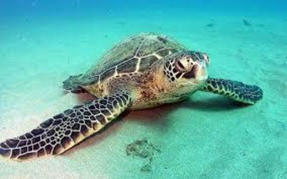
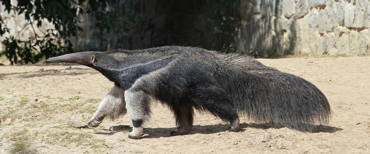
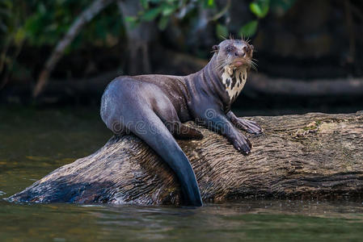
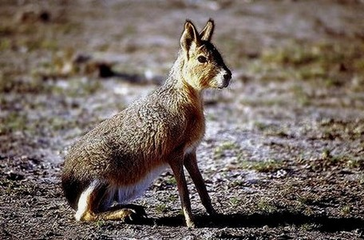
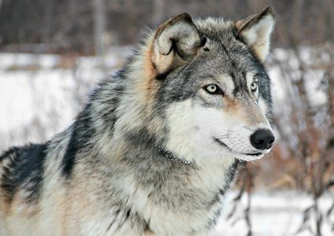
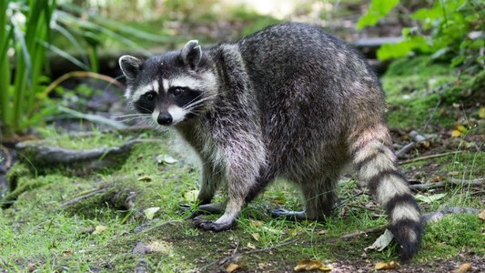

AMERICA
Tortuga Verde

La tortuga verde es una especie de tortuga marina de la familia Cheloniidae. Esta tortuga de gran tamaño se distribuye por los mares tropicales y subtropicales alrededor del mundo, con dos poblaciones distintas en los océanos Atlántico y Pacífico. El nombre común de la especie deriva del color verde de su grasa, y no del color de su caparazón. Como especie reconocida en peligro de extinción por la UICN y la CITES, su explotación está protegida en casi todos los países del mundo. Es ilegal capturar, dañar o matar tortugas de este tipo. Adicionalmente, algunos países han implementado varias leyes para proteger a las tortugas y sus sitios de anidación dentro de su jurisdicción. Sin embargo, la población de tortugas aún está en peligro de extinción debido a algunas prácticas humanas
Mas informaciónOso Hormiguero

Los vermilinguos, conocidos vulgarmente como osos hormigueros, osos palmeros o yurumíes, son un suborden de mamíferos placentarios del orden Pilosa. Son nativos del sureste mexicano, América Central y Sudamérica; incluye dos familias, Cyclopedidae y Myrmecophagidae. A pesar de su nombre, no tienen ningún parentesco cercano con los osos
Mas informaciónNutria

Los lutrinos, conocidos comúnmente como nutrias, son una subfamilia de mamíferos carnívoros de la gran familia Mustelidae. Existen 13 especies de nutrias repartidas en 7 géneros, con una distribución de la población prácticamente mundial. En América del Sur es común que se llame «nutria» a otro animal, el coipo o quiyá, de costumbres predominantemente acuáticas, pero es un roedor de la familia de los miocastóridos.
Mas informaciónLiebre de Patagonia

La mara es una especie de roedor de la familia Caviidae, también conocido como mara patagónica, liebre patagónica, y liebre criolla, aunque no pertenece al orden de las verdaderas liebres. Es uno de los roedores más grandes del mundo, con un peso promedio de 8 kg, con ejemplares de hasta 16 kg. Es uno de los mamíferos endémicos de Argentina de mayor tamaño. Posee patas largas y fuertes que usa para correr a alta velocidad cuando se siente perseguida.
Mas informaciónLobo gris

El lobo es una especie de mamífero placentario del orden de los carnívoros. El perro doméstico se considera miembro de la misma especie según distintos indicios, la secuencia del ADN y otros estudios genéticos. Los lobos fueron antaño abundantes y se distribuían por Norteamérica, Eurasia y el Oriente Medio. Actualmente, por una serie de razones relacionadas con el hombre, incluyendo el muy extendido hábito de la caza, los lobos habitan únicamente en una muy limitada porción del que antes fue su territorio. Aunque está clasificada como una especie poco amenazada para su extinción, en algunas regiones, incluyendo la parte continental de los Estados Unidos de América, la especie está listada como en peligro o amenazada. Los lobos son cazados en muchas áreas del mundo por la amenaza que representan para el ganado, así como por deporte
Mas informaciónMapache

Procyon es un género de mamíferos carnívoros de la familia Procyonidae1 conocidos comúnmente como mapaches u osos lavadores. Son propios de América.
Mas información